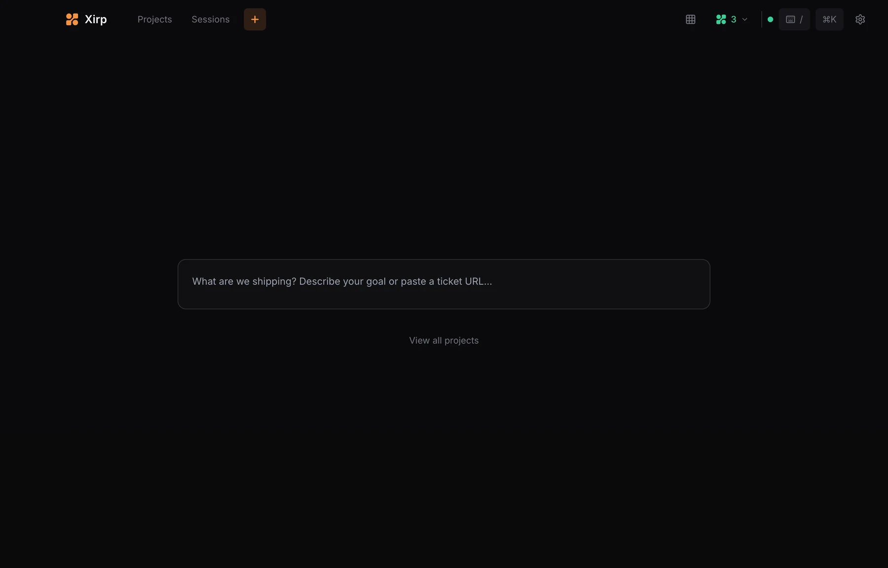
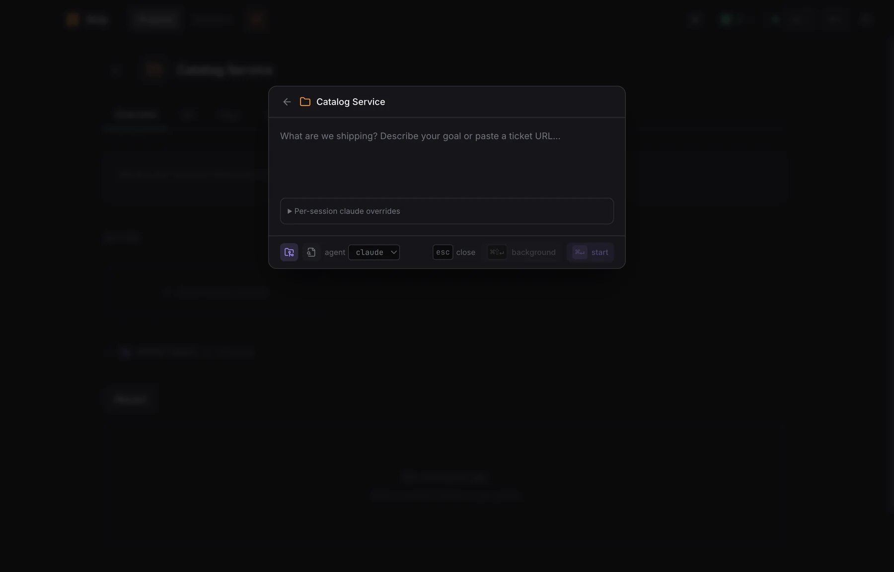
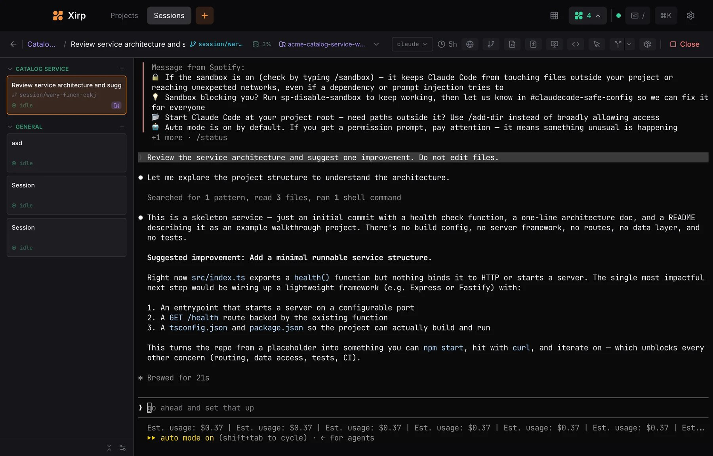

안녕하세요. dev.log입니다.
AI 코딩 에이전트 하나를 쓸 때는 터미널 한두 개면 충분합니다. Codex로 기능을 만들고 Claude Code로 다른 버그를 고치면 상황이 달라집니다. 어느 세션이 멈췄는지, 어떤 브랜치에서 일하는지 찾는 시간이 늘어납니다.
Xirp는 이처럼 흩어진 AI 코딩 세션을 프로젝트별로 모아 관리하는 macOS 앱입니다. 앱을 닫았다 다시 열어도 이어지는 터미널과 상태 표시, Git 변경을 한 화면에서 다룹니다. 별도 브랜치와 작업 폴더를 만드는 Git worktree도 선택할 수 있습니다. 이미 설치한 Claude Code, Codex, Gemini CLI를 그대로 사용합니다.
비슷해 보이는 Orca는 작업마다 독립된 Git worktree를 만듭니다. 여러 구현의 코드 변경을 비교하고 하나를 고르는 IDE에 가깝습니다. Spotify Portal은 회사의 서비스, 담당 팀과 문서를 모아 둔 내부 개발자 포털입니다. 개인이 Xirp의 로컬 기능만 쓸 때는 필요 없습니다.
흩어진 로컬 세션을 관리하려면 Xirp 단독이 출발점입니다. 여러 구현을 비교하고 PR로 제출하려면 Orca를, 사내 정보를 에이전트에 제공하려면 Xirp와 Portal을 고릅니다.

Xirp의 프로젝트와 지속 세션
Xirp 공식 문서에 따르면 현재 지원 에이전트는 Claude Code, Codex, Gemini입니다. 각 세션은 앱을 다시 열어도 이어지는 지속 터미널로 작동합니다. Projects에는 저장소나 폴더를 프로젝트로 등록합니다. Sessions와 Grid view에서는 진행 중이거나 입력을 기다리는 터미널을 찾습니다.
모델, 로그인 정보, 추론 설정, 권한과 샌드박스는 각 에이전트의 CLI 설정을 따릅니다. Xirp는 모델 자체보다 터미널 세션과 Git 작업 공간을 관리합니다.
한 에이전트와 한 세션만 쓴다면 기존 터미널이 더 단순합니다. Xirp의 이점은 프로젝트나 세션이 두세 개로 늘어나 어느 작업이 어디에서 멈췄는지 자주 확인해야 할 때 생깁니다.
세션 중심 Xirp와 worktree 중심 Orca
두 제품 모두 기존 CLI 에이전트와 Git worktree를 지원합니다. Xirp에서는 worktree가 세션의 선택지이고, Orca에서는 작업의 기본 단위입니다. 아래 표는 전체 기능표가 아니라 선택에 영향을 주는 공개 기능만 추렸습니다.
| 비교 항목 | Xirp | Orca |
|---|---|---|
| 중심 관리 단위 | 프로젝트 안의 에이전트 세션 | 작업마다 만든 Git worktree |
| worktree 사용 | 세션을 열 때 main checkout과 새 worktree 중 선택 | 모든 작업을 별도 worktree로 나누는 기본 구조 |
| 화면의 중심 | 세션 상태, 지속 터미널, Grid view | 편집기, 터미널, 브라우저, 코드 변경 비교 |
| 작업 마무리 | Git 탭에서 변경 비교·commit·PR 상태 확인 | 변경 줄 주석, stage, commit, push·PR 제출과 검사 확인 |
| 실행 위치 | 현재 로컬 macOS 베타 | 로컬, SSH, 자체 서버, 사용자 소유 클라우드 환경 |
| 조직 정보 | Portal을 연결하면 사내 카탈로그와 문서 사용 | GitHub·Linear·Jira 같은 작업 항목과 개발 흐름 연결 |
Orca 공식 문서는 작업 하나 = worktree 하나를 기본 모델로 둡니다. 같은 버그를 여러 에이전트에 맡기면 각각 별도 브랜치와 파일 폴더에서 실행합니다. 이후 내장 diff 화면에서 결과를 비교해 하나를 선택합니다. 편집, 변경 검토와 PR 제출까지 한 도구에서 끝내려는 개발자에게 맞습니다.
Xirp에서는 기존 작업 폴더에서 세션을 이어가거나 여러 저장소의 상태만 모아 볼 수도 있습니다. Xirp의 Git 탭에서도 변경 비교, commit 제어와 PR 상태 확인이 가능합니다. Orca는 이 검토 단계를 worktree별 편집기와 주석, stage, push 흐름에 더 깊게 묶습니다. 공개 기능을 비교한 판단이며 속도, 비용, 코드 품질을 측정한 순위는 아닙니다.
Spotify Portal이 회사 정보를 Xirp에 연결하는 과정
Spotify Portal은 Backstage를 기반으로 만든 기업용 내부 개발자 포털입니다. 회사 안의 서비스와 저장소가 누구 소유인지 보여 줍니다. 의존 관계, 문서와 API도 한곳에서 찾게 해 줍니다. 개인 프로젝트나 Spotify 음악 계정을 관리하는 서비스는 아닙니다.
Portal의 정보가 Xirp 세션에 연결되는 순서는 다음과 같습니다.
- Software Catalog에 서비스, 저장소, 담당 팀, 의존 관계와 관련 링크를 모읍니다.
- Workspace가 특정 업무와 문서, 관련 개발 정보를 하나의 맥락으로 묶습니다.
- Catalog나 Workspace에서 Xirp 세션을 시작하면 에이전트가 MCP 연결을 통해 필요한 정보를 불러옵니다. MCP는 에이전트가 외부 도구와 정보를 정해진 방식으로 읽는 연결 규격입니다.
에이전트가 결제 서비스의 오류를 고친다고 가정해 보겠습니다. Xirp에서 직접 만든 로컬 세션은 코드와 현재 터미널을 봅니다. Catalog나 Workspace에서 시작한 세션은 담당 팀, 연결된 API와 운영 문서도 찾을 수 있습니다. Portal은 이처럼 조직 안에서 코드가 놓인 맥락을 제공합니다.
프로젝트 등록, 지속 터미널, worktree, Git 변경과 Grid view는 Xirp만으로 쓸 수 있습니다. Portal Workspace에서 시작한 Claude Code·Codex 세션은 사용자가 기록을 올려 팀과 공유할 수 있습니다. 기록에는 대화, 도구 호출, 파일 변경과 경로가 포함될 수 있습니다. Xirp가 비밀정보를 자동으로 지우지 않으므로 업로드 전에 내용을 확인해야 합니다.
Portal 없이 첫 세션 시작하기
먼저 베타 다운로드 페이지에서 Apple silicon 또는 Intel Mac용 설치 파일을 고릅니다. 가입에는 업무용 이메일이 필요합니다. Spotify Technology 계정은 개인 Spotify 음악 계정과 별도입니다. 사용할 CLI도 미리 설치하고 로그인해야 합니다.
첫 세션은 다음 순서로 열 수 있습니다.
- Xirp의
Projects에서Add Project를 눌러 프로젝트 폴더를 등록합니다. - 프로젝트 화면에서
New session을 열고 완료 여부를 확인할 수 있는 목표를 적습니다. - 사용할 에이전트를 고릅니다.
- 기존 작업 폴더를 쓸지, 새 Git worktree를 만들지 선택합니다.
Start를 누르고 터미널에 나타나는 응답과 권한 요청을 확인합니다.
main checkout은 지금 쓰는 작업 폴더를 그대로 사용합니다. 다른 세션도 같은 저장소의 파일을 수정한다면 새 worktree를 고르세요. worktree는 별도 브랜치와 파일 폴더를 만들어 작업 중 변경이 바로 섞이지 않게 합니다.
아래 공식 화면에서는 가운데 목표 입력란을 채운 다음, 아래쪽에서 worktree와 에이전트를 확인합니다. 선택값이 맞으면 start로 넘어가면 됩니다.

Git 저장소가 아닌 폴더도 세션과 파일, rules, skills는 쓸 수 있습니다. 브랜치와 worktree까지 사용하려면 단일 Git 저장소를 프로젝트로 등록해야 합니다.
worktree와 Grid view로 병렬 세션 나누기
worktree는 서로 독립적으로 끝낼 수 있는 작업에 하나씩 배정합니다. 로그인 오류 수정과 문서 정리는 나누기 쉽습니다. 같은 인증 설계를 동시에 바꾸는 두 작업은 마지막에 충돌할 수 있습니다. worktree는 작업 중 파일을 분리할 뿐 merge 결과까지 해결하지 않습니다.
세션이 늘어나면 Cmd+G로 Grid view를 엽니다. Session hooks를 켠 세션에는 작업 중, 대기, 완료 또는 실패 상태가 표시됩니다. 왼쪽 목록에서 입력을 기다리는 세션을 고르고 오른쪽 터미널에서 답합니다.

상태 표시는 작업을 찾기 위한 신호일 뿐 완료 증거는 아닙니다. 에이전트가 끝났다고 보고하면 Git 변경을 읽고 테스트를 다시 확인한 뒤 커밋하세요. 자동 승인이나 권한 우회도 각 에이전트의 CLI 설정을 따르므로 처음에는 필요한 동작만 허용하는 편이 안전합니다.
터미널·Xirp·Orca 중 무엇을 고를까
| 현재 상황 | 권장 도구 | 이유 |
|---|---|---|
| 한 프로젝트에서 한 세션만 사용 | 기존 터미널 | 관리 앱을 추가할 이점이 작음 |
| 여러 프로젝트와 CLI 세션의 상태를 함께 확인 | Xirp 단독 | 지속 세션과 Grid view가 중심 문제를 해결 |
| 여러 에이전트의 구현을 분리해 비교하고 PR 제출 | Orca | worktree, 변경 검토와 PR 흐름이 더 깊게 연결됨 |
| 팀의 서비스 정보와 문서를 에이전트에 제공 | Xirp+Portal | Software Catalog와 Workspace의 조직 맥락을 사용 |
| Windows·Linux·원격 서버에서 에이전트 실행 | Orca 또는 기존 원격 도구 | Xirp는 로컬 macOS 베타, Orca 원격 환경은 사용자 인프라를 사용 |
이 표는 공개 기능과 제약으로 고른 시작점이며 성능이나 코드 품질 순위가 아닙니다.
Xirp는 아직 독점 소프트웨어의 베타입니다. 화면과 지원 범위가 바뀔 수 있으므로 설치 후 업데이트 상태를 확인하세요. 로컬 프로젝트 등록만으로 코드가 Portal에 올라가지는 않습니다. 세션 기록을 공유할 때는 대화와 경로에 비밀정보가 없는지 직접 살펴봐야 합니다.
Xirp를 고른 독자는 Portal을 연결하기 전에 로컬 프로젝트 하나와 worktree 세션 하나부터 열어 보세요.